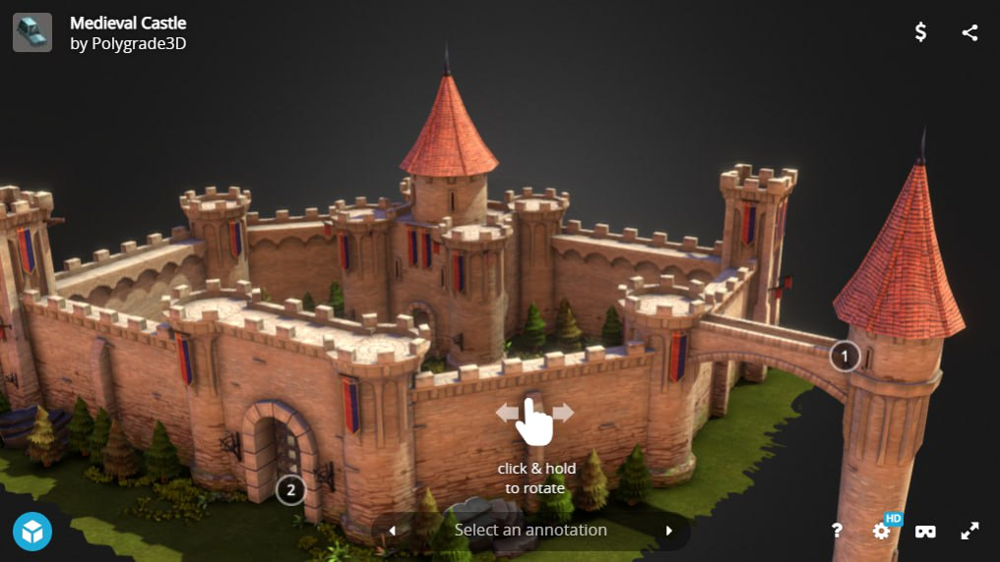

Inspired by the drawing of one of our members, we want to bring the scene she drew to 3D. It's a medieval force that will be
procedurally generated to get different versions of it! The result will be an interactive scene or visualization with the effect we want to achieve.
Medieval Castle Unity
Goals and Deliverables
The goals of our project are:
Week 4: Have a simple castle generation working with the wave function collapse algorithm in a realistic environment created in Unity.
Week 5.5:
Be able to generate more complex castles with different towers, walls, etc.
Be able to procedurally generate a small village inside the castle.
Be able to change the color of the castle.
Deliverables: 5 scenes with 5 different procedurally generated castles created in Unity that can be compared with the drawing of the castle that we initially thought of and the castle we created arbitrarily in week 2.
Schedule
Our schedule and division of tasks are as follows:
Week 1:
Investigation and reading on how the wave function collapse algorithm works.
Find a base kit to create a more complex castle.
Think how to use that algorithm with our objects from the castle kit.
Week 2:
Creation of the project structure and classes in Unity.
Creation of the environment in which we are going to put the castle Unity.
Get familiarized with the objects of castle kit we are going to use by creating a small castle, for example. Check it's used,
as well as how to import it.
Check how the scene looks with an arbitrary castle to make sure that the objects from the castle kit we are going to use work fine and look good.
Week 3:
Start with the implementation of the wave function collapse algorithm.
Learn to use Unity because none of us already knows how to use it.
Week 4:
Choose a subset of the kit that will be passed to the algorithm and specify, for each of them, their coordinates so we can adapt the algorithm to our problem.